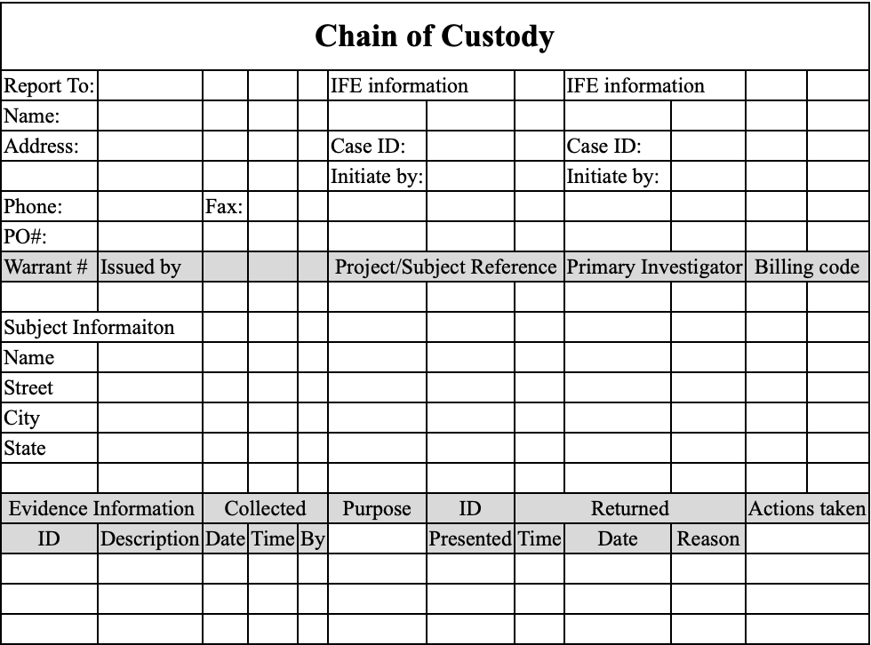

Basically, all of the artefacts listed in the Investigation section fall under the category “user activity” one way or another. Even if some process spawned some other process, somewhere in the past, user interaction was still required. That’s why I find it so hard to find the perfect categorisation. I’ve decided to devote this section to common strategies of how one would investigate user activity and which artefacts they would use at what point in time.
Techniques
There are a couple of techniques to use. This can be applied to everything: logs, dynamic malware analysis, user activity, folder activity, system events etc.
One of them is called “Find Evil” 👿. For this method, you need to know a baseline. It helps to run some collection for a clean system to see the baseline for this OS/setup if you are unsure. Otherwise, looking at the data, you might notice something standing out, like a Windows core process spawned from the wrong direction or an HTTP traffic flowing back and forth from a java.exe. Another example is something like a suddenly increased number of server requests could indicate nefarious activity. Again, you need to know the baseline to tell if something is wrong.
🛠 Typically, this kind of stuff (spikes) is picked up by the IDS/IPS/WAF systems quite neatly. 🗒 TODO: https://www.open-scap.org/security-policies/scap-security-guide/.
A little more sophisticated “Find Evil” technique is what I call behavioural analysis. For this method, you must think like an attacker and a regular user. For example, for everyday use, the failed login process would look something like the following:
- First login attempt - error
- Second login attempt - error
- Third login attempt - error
- Reset password
- Login
For a malicious user, it would be something like (brute-forcing):
- First login attempt - error
- Second login attempt - error
- N-login attempt - account blocked
- Sleep for N minutes
- M-login attempt - error
- etc
For a malicious user attempting password spraying attack (when one password is used for different accounts), you are likely to do something like the following:
- First login attempt - error
- Second login attempt - error
- Third login attempt - error
- Stop (no successful login or password reset)
Another technique is called frequency analysis 📊. Depending on the system, you’d look either for something more or less frequent. Covering all the cases is hard, but maybe some examples will do the trick. For example, you have a web server. Most of the time, with regular traffic and no malicious activity, there would be 200 status codes returned by the server. However, if an attacker performs a brute force attack against user accounts or IDOR probing, you would see a spike in the 403 (access denied) HTTP status code. If the attacker were to perform some directory busting, you would probably see a point in 404.
🛠 SIEM/IDS + ML (machine learning engine) could help identify those “unusual things”. Some SIEM would allow making rules based on different log fields. So, for example, in the above scenario, one could create a rule to alert the CSIRT if a 100 threshold for 404 HTTP status code returned is hit in 1 minute.
One more technique that I have been using I call pattern analysis. This one needs to be VERY knowledgeable about red teaming activities and current vulnerabilities. Refrain from overwhelming yourself with the openness and exploits out there, and filter the news and feeds only to show those relevant to your environment. For example, see only Apache Tomcat stuff, PHP and nginx + common web application vulnerabilities. Patterns for each vulnerability exploited would be different, of course. For example, for an SQLi, it’s something like a single quote (') or sleep keyword (also could be an indicator of command line injection) or some other pattern like 'or%201=1-- or anything from list and even more. You can find the list of payloads (designs) for common vulnerabilities online to get a general idea.
🛠 For post-incident analyses, I find it helpful to use Excel/Numbers due to their advanced pivoting and filtering functionality. It’s useful for both frequency and pattern analysis. This, however, will only work for offline analysis and only on data that’s not too overwhelming. If you are familiar with the querying language, SIEM tools can also be convenient for visualisation and filtering.
So, knowing the red team operations, possible attacks on your infrastructure, and standard user behaviour is helpful.
Stacking. It’s not a separate technique per se, rather it referes to the analysis of a bunch of systems. You would use either of the techniques above for a BUNCH of systems. Frequency analysis is usually the first one to go. Items that appear few times, or seen on one system only usually stand out.
✅ Checklists
Incident Response (SANS)
See the full checklist…
- 🥒 Preparation
- 📝 Compile a list of all your assets (servers, networks, applications etc.)
- 📈 Rank them by the level of importance.
- 👁 Monitor their traffic patterns and create baselines.
- 🫂 Create a communication plan (who to contact, how, and when based on each incident type). Incident Handler Communications and Facilities (contacts, on-call info, reporting mechanism, issue tracking, smartphones, encryption soft, war room, secure storage).
- 🚧 Determine which security events and at what thresholds should be investigated.
- 📖 Create one incident response plan and playbooks for each type of incident that are most likely to happen or can inflict the most damage.
- 📖 Create an Incident Response Policy.
- Identification (🔬🧪 DF *)
- 🚨 Discover. Discovery and classification (Where is the sensitive data?), Entitlements reporting (Who can access), Vulnerability Assessment (How to secure it?).
- 🔎 Investigate.
- ⛓ Harden. Reconfigure, mask, encrypt (How to protect sensitive data?)
- 👀 🗡 Monitor and Protect. Activity monitoring, Blocking quarantine, dynamic data masking
- Repeat.
- Containment (🔬🧪 DF *)
- Eradication (🔬🧪 DF *)
- Recovery (🔬🧪 DF *)
- Lessons Learnt (🔬🧪 DF *)
🔬🧪 Digital Forensics process can take place at any stage of the incident response process.
Digital Forensics
See the full checklist…
- 🤔 Identification/Assessment (aka Preparation)
- Define scope
- Sterilise the target media (more here)
- 🧹 Collection
- 🏃🏼 First response
- Sanitise the target disk that will be used to copy evidence to
- Prepare all the toolkits that will be needed.
- Start filling out the Chain of Custody form; each piece of evidence is assigned a unique ID (see below for examples).
- All photos were taken before touching the scene.
- Ensure that the Internet, Bluetooth, and AirDrop are all turned off on the machine used to acquire the image (* in case of physical acquisition).
- Connect the write blocker to the PC, and the evidence drive to the write blocker (power + data cables) or launch a software write blocker on the acquirer machine (see below for how-to) (* in case of physical acquisition).
- Calculate the hash of the evidence drive (pre-hash). Document it.
- Image the evidence.
- Calculate the hash of the original evidence again, validate the hash and document it.
- Calculate the **hash of the image taken (post-hash) and ensure it matches the above ones taken previously.
- 🤏🏼 Acquisition (live or dead)
- Physical storage
- Volume analysis. Volume - a collection of storage locations.
- File System
- DB
- Swap space
- Memory analysis
- Volume analysis. Volume - a collection of storage locations.
- Logical backup
- Physical storage
- 🗳 Evidence Preservation
- Copy original, operate on the copy.
- Calculate hashes at each stage (unless it’s cloud evidence)
- Use hardware write-blockers or software write-blockers
- Make sure min number of files is created.
- Register timestamps before opening files.
- 📇 Documentation.
- 🏃🏼 First response
- 🔬🧪 Examination & Analysis
- 🦠 Malicious Process
- Network
- Files
- Processes
- 👥 User
- Is there malicious user activity (account takeover, insider threat)?
- ⚙️ OS Configs
- Are there mal configs (services enabled, disabled logging)?
- 🗜 Hardware
- Are there mal hardware changes (firmware, BIOS)?
- 🦠 Malicious Process
🐾 Types of Evidence 👣
Circumstantial
Circumstantial evidence refers to the collection of facts that, when considered together, can be used to infer a conclusion about malicious activity or a person involved. This type of evidence does not directly prove the fact in question but allows for the possibility of drawing inferences to establish the fact indirectly. Circumstantial evidence is often used in digital forensics and incident investigations when direct evidence is not available. Let’s consider a scenario in which an organization suspects a data breach has occurred. They are trying to determine if an employee, John, is responsible for the breach. Direct evidence would be something like a security video showing John copying sensitive files onto a USB drive or an email sent by John admitting to the breach. Circumstantial evidence, on the other hand, would involve facts that indirectly suggest John’s involvement. For example: Log files showing that John’s user account accessed the sensitive files just before the data breach occurred. Records indicating that John’s computer was connected to a USB drive around the same time the files were accessed. The breached files were found on a dark web marketplace, and the seller’s account was linked to an email address similar to one John used for personal purposes. John had recently expressed dissatisfaction with the company and was looking for a new job. None of these individual facts directly prove that John is responsible for the data breach. However, when considered together, they create a strong circumstantial case suggesting John’s involvement in the malicious activity. ChatGPT
Incontrovertible
Incontrovertible evidence refers to evidence that is indisputable, irrefutable, or impossible to deny. It is so strong and compelling that it leaves no room for doubt or argument. In digital forensics, incontrovertible evidence may include things like unaltered log files, digital signatures, or cryptographic hashes that prove the integrity and authenticity of data. However, it is essential to note that it can be challenging to obtain incontrovertible evidence in digital forensics due to the potential for data manipulation or tampering.
Corroborating
Corroborating evidence is additional evidence that supports or confirms the initial evidence or a fact in question. Corroborating evidence helps to strengthen the overall case by providing independent confirmation of the facts or findings. In digital forensics, corroborating evidence may include things like additional log files from different systems, witness statements, or even physical evidence that supports the digital evidence. The use of corroborating evidence is particularly important in digital forensics because it can help to establish the reliability and credibility of the findings and minimize the chances of false positives or inaccurate conclusions.
🏺Common Activity Artefacts
Below is the list of the most common artefacts that could be used to determine user activity. Some of them are mobile specific.
I’ve devided them into two main groups: primary and secondary. Primary artefacts are those that are specifically designed to provide this information. For example, you can view contacts via address book or read SMS messages.
Secondary artefacts are like data lakes: they aggreagate lots sort of information that might or might not contain something relevant. In requires wits and analysis in order to retrieve something useful from there if anything is there. For example, to determine if a person knows another person, you could see their contact list (which is the easiest way). However, not all connections are added there. So, you’d probably refer to mailing activity as well. The last resort would be to see photos and videos in order to find a familiar face. There is small chance to also find this information in some notes. For example, “I met Julia Roberts yesterday on the tube! Imagine that!” Some artefacts are listed both under secondary and primary sections since for some purposes they might be secondary. For example, social media is basically a very sophisticated address book + messages system. However, there are feeds there as well and as with all messages in general you sometime find something relevant there. For instance, if you are not sure if the person did work this day and check their social media page where there was a photo from a bar posted at 2pm on Thursday (too early, ey!), you might be relatively sure that no, the person was no at work that time.
Secondary artefacts
- Notes
- Voice assistant’s logs
- Browser activity
- Photos, videos (local, online)
- Screen or voice recordings
- Calendar events
- Music
- Gaming
- Social media
Primary Artefacts
See all…
- 👥 Contacts and Connections
- 📖 Address book
- 💬 Messangers
- 💬 Social media
- SMS/MMS
- ☎️ Call history (video, phone)
- 🗺 Geo posisition
- Device IP
- Traffic (if logged)
- Social communications metadata
- Maps applications
- VPNs used (logs if any)
- Photos and videos
- Documents saved/downloaded/deleted/modified
- Calendar events
- Web browsing
- Screen or voice recordings
- Computer Activity
- System logs (logs, prefetch, events etc)
- Documents saved/downloaded/deleted/modified/renamed/copied
- Folders traversed
- USB and other external media attached
- Processes running/terminated/spawned
- Encryption/wiping software usage
- Shortcuts, symbolic links and links
- Configuration files (etc, plist, registry)
- Network connections opened/closed
📝 Prioritising
When reviewing processes and artefacts for potential maliciousness, I use the following list, where items are ordered by their likelihood of being malicious.
- Outstanding
exeor batfilesnamed with one digit or one letter likea.ps1,1.bat.a.exeetc. - Drivers that were installed recently or that I don’t recognise.
- Unfamiliar program names (google or ask ChatGPT to know more about the such program)
- Familiar programs in unusual places
- Programs that seem legit are in the expected folders (last resort).
🥷🏼 IR Methodology
For the most relevant scenarios, keeping playbooks and runbooks at your disposal is crucial. This will help you stay less stressed and be prepared for various outcomes. I have created a high-level overview of potential playbooks based on the MITRE ATTACK matrix, which includes guidelines for detection, investigation, and cleanup techniques. Runbooks, on the other hand, are highly detailed and technical instructions, such as “How to reset an account password” or “How to change an AWS EC2 inline policy.” One runbook can be referred to by several playbooks, which is perfectly fine. Consider playbooks as constructors with a relatively unique plan and runbooks as the specific steps linked to some or all of the described plan’s stages. Below is a part of the table I have mentioned above.

Following the MITRE matrix, I have roughly divided the content into two different realms: infrastructure and applications. Each sticker represents two things simultaneously:
- 📘 It’s a playbook that needs to be followed if an incident occurs.
- ❓ It answers a question like “How can the adversary get an initial foothold in the system?” The answer would differ for each realm.
Some playbooks have arrows pointing to other playbooks within one cell. This indicates that an investigation of a particular event might lead to another playbook. For example, while investigating a possibility that suggests a vulnerability in a system within the infrastructure was exploited, we might discover that the exposure was not in our system but in a vendor’s system. This could lead to the investigation shifting to a different playbook more applicable to the vendor’s system.
I am working on a framework (MITRE + the above table + Jupyter) for companies to establish which playbooks should be prioritised and developed. The way to go would be as follows:
- Define the infrastructure.
- Go through the relevant MITRE matrix to understand potential risks.
- Profile the potential adversary and align this profile with the MITRE matrix.
- Using the table above, define playbooks of the highest priority.
- In each playbook, describe the detection, investigation and cleanup flow for the most relevant TTPs.
- Ensure a runbook provides technical details (links, scripts, etc.) for each playbook.
Detection and Analysis (SANS Identification)
Lots of systems can be used to monitor the network and host for malicious activity. These are IDS, IPS, firewalls, AV, SIEM (Security Information and Event Management solutions, SIM + SEM), IR frameworks, threat intelligence etc. However, the employee might report the incident (for example, receiving a suspicious email) or by a third party (data exfiltrated seen in the dark net). Before it is confirmed to be accurate or the result of malicious intent, it’s called an event.
Precursors❓ - signs that the incident may occur in the future. For example, logs show that a vulnerability scanner was used. Or a vulnerability was found in some software used by the company.
Indicators 🚨 - signs that an incident has occurred or is occurring. Malware detected by an anti-virus program, configurations changed, multiple failed logins etc.
Several techniques help confirm the incident. See the Investigation -> Methodology section for more details.
- Frequency analysis. Something that is outstandingly rare across systems might be malicious.
- Average vs Evil behaviour. You know what’s considered normal for the given system/user, and something unusual is a primary suspect for further analysis.
- IoC. Indicators of compromise, like some virus hashes or file extensions used by a known crypto malware.
- IoA or pattern analysis. Indicators of attack. Depending on the vulnerability/attack in place, these would be of some particular pattern. For example, you see some string like
<script>alert(1)</script>- it’s probably an XSS attempt.
After the incident is confirmed, you initiate an investigation.
📝 I found it quite hard to separate incident response and digital forensics articles from one another. For now, I see the incident response as a more general process that could require a more thorough examination (digital forensics) but not necessarily. As I see it, we have an event and start the IR process to determine whether it’s malicious. Identify compromised hosts and map the artefacts to the ATCK MITRE framework. Then, to fully contain and remediate the incident, we call for DF, trying to analyse malware, analyse the registry on Windows, recover data from unallocated space, etc., to reconstruct the whole picture in detail. So, roughly speaking, IR is about sketching, and DF is about more information.
Common Malicious Activity, Detection and Countermeasures
Mapping. Attackers must first collect information about the target system: ping, nmap. Countermeasures:
- record traffic
- Look for suspicious activity.
- Use a host scanner and keep track of all the PCs within your network. A new PC should trigger an alert.
Packet Sniffing. An attacker may perform (or try to achieve) traffic sniffing. It is possible in the following cases: Broadcasting, promiscuous NIC, and if the traffic is unencrypted. Countermeasures:
- Periodically check whether the NICs of the hosts are in promiscuous mode.
- We switched Ethernet (1 host per segment of broadcast media).
IP-spoofing. Can generate “raw” IP packets, putting any value as a source IP. The receiver won’t know that the other party is spoofed. Countermeasures:
DoS. Countermeasures:
- Filter out flooded packets (e.g. SYN) before they reach the host.
- traceback to the source of floods
🎣 Phishing. Spear phishing - targeted attack on specific users or groups of users. Whaling - spear phishing for high executive managers. Strategies:
- They claim they’ve seen numerous failed login attempts or other suspicious activity.
- They claim that there is some problem with your account or payment method.
- Confirm some personal information.
- Include a fake invoice.
- Click on a link to make a payment.
- You are eligible for a government refund.
- Coupon for free stuff.
How to detect it?
- Suspicious sender’s address.
- Generic signature and greetings.
- They spoofed hyperlinks and websites.
- Spelling and layout.
- Suspicious attachment.
PoS. Most of the malware is equipped with a backdoor and C&C features. The cardholder’s data is decrypted in RAM; that’s why this type of malware sniffs the RAM (RAM scraping). Countermeasures:
- Monitor the network for changes.
- Good encryption
- Limit the host that communicates with PoS.
- chip-card-enabled PoS terminals
- Employee screening and training
Injections. MongoDB. $where is interpreted as JS. DoS: $where="d=new Date; do {c=new Date;} while {c-d<10000};", XPath. 'or 1=1 or '1'='1, LDAP.*)(cn=))(|cn=*, SQL or 1=1-- etc. The best practice is to allow listing allowed and needed characters.
- Preventing OS injection
- Don’t use OS commands.
- Sanitise input
- Accept, say, ids and lookup.
- Leat prev
- do not run through shell interpreters
- explicit paths
- Preventing SQLi
- prepared statements
- sanitise
- do not expose errors with SQL statements etc
- limit permissions
- stored procedures
- ORM libs (Hibernate)
Common AWS issues The following list is the top ten identified misconfigurations in Amazon EC2 instances and workloads from our data set:
- Unconfigured EC2 instance single-point-of-failure and auto-scaling issue
- S3 logging not enabled
- S3 object versioning is not enabled
- User not configured to use MFA
- User access key not configured with rotation
- IAM policies are attached directly to the user
- Dangerous user-privileged access to S3
- ELB security group allows insecure access to ports or protocols
- IAM access keys unused for 90 days
- Dangerous user-privileged access to RDS
Spillage
If it’s AWS - open up a case with AWS Business Support: report spillage findings and response actions, DoD 5220.
Documentation
This is when you start taking notes for the incident (or event). Current status of the incident, summary, indicators, other related incidents, actions taken by all, a chain of custody*, impact assessment, contacts, list of evidence, comments from incident handlers (IH), next steps to be taken (rebuild the host/upgrade).
How to categorise the incident? Simply put, how bad is that?
- Functional Impact Categories
- None - nothing’s changed.
- Low - the business can still provide critical services, but the efficiency needs to be recovered.
- Medium - O. needs to be able to provide critical services to some users.
- High - O. is no longer able to provide its critical services.
- Information Impact Categories
- None - no info was exfiltrated or compromised.
- Privacy breach - sensitive PII was accessed or exfiltrated.
- Proprietary breach - unclassified proprietary info exfiltrated (PCII).
- Integrity loss - sensitive or proprietary info was changed or deleted.
- Recoverability Effort Categories, TTR - time to recovery
- Regular - TTR is predictable with existing resources.
- Supplemented - TTR is predictable with additional resources.
- Extended - TTR is unpredictable.
- If not recoverable, launch the investigation.
Protected Data
Suppose the GDPR data was leaked - 72 hours to disclose the breach. HIPAA has other time limits.
Containment. Eradication. Recovery.
Containment 📦 aims to stop the bleeding🩸. It’s a critical stage. While during Identification (aka detection and analysis), we confirm that something’s going wrong, this stage is used to see the whole picture, how the breach happened, what damage was already done, which systems are compromised, etc. Quoting SANS:
The goal of containment is to limit damage from the current security incident and prevent further damage. Several steps are necessary to completely mitigate the incident while avoiding the destruction of evidence that may be needed for prosecution.
So, digital forensics can occur anywhere from Analysis (aka Identification) to the Lessons Learned stage. It may not happen, however. For example, a DoS attack may not need this facility.
Choosing a containment strategy:
- ❓ Is there potential damage or theft of resources?
- ❓ Do we need to preserve the evidence for the court/ourselves and make an image of the compromised system?
- ❓ Do we need the service to be available during the investigation?
- ❓ How much time do we have and need?
- ❓What resources are available to implement this strategy?
- ❓ What’s the strategy’s effectiveness (partial or complete containment)?
Below is the checklist to ensure the responder has done their job. These questions can be used in a ticket or IR timesheet, mentioned above in the Documentation section.
- ❓ Who attacked you and why?
- ❓ When and How did it happen?
- ❓ Did this happen because of the poor sec policy and processes?
- ❓ How widespread is the incident?
- ❓ What steps are being taken to determine what happened and prevent it in future?
- ❓ What’s the impact?
- ❓ Was any personally identifiable information leaked?
- ❓ What is the estimated cost of this incident?
The SANS containment process involves:
Short-term containment—limiting damage before the incident worsens, usually by isolating network segments, taking down hacked production servers and routing to failover.
System backup—taking a forensic image of the affected system(s) with tools such as Forensic Tool Kit (FTK) or EnCase, and only then wiping and reimaging the systems. This will preserve evidence from the attack that can be used in court and for further investigation of the incident and lessons learned.
Long-term containment—applying temporary fixes to make it possible to bring production systems back up. The primary focus is removing accounts or backdoors left by attackers on the methods and addressing the root cause—for example, fixing a broken authentication mechanism or patching a vulnerability that led to the attack.
Eradication aims to remove the threat. For example, please remove the malware, and return configs to their normal state. It’s a common mistake of many companies to jump right to this stage without proper prior investigation and containment. In this case, the attacker might still be inside, the vulnerability they used is still unmatched, or the user they social engineered still needs to be informed about this event properly etc. It can turn into a “whack-a-mole” game which is no fun when a company’s reputation and finance 💵 are concerned.
- ❓ Can the problem be isolated? Are all affected isolated?
- ❓ Have the forensic copy been created? For each piece of evidence, keep the info (or chain of custody, even better):
- Identifying information (location, serial, model, hostname, MAC and IP)
- Name, title, and phone of each individual who collected or handled the evidence
- Time and date (+ time zone) of each occurrence of evidence handling
- The location where the evidence was stored
- ❓ Can this system be reimaged and patched?
- ❓ Was all malware removed and the system hardened?
- ❓ What tools will you use to test, monitor and verify that the exact cause no longer compromises the restored systems?
Recovery aims to get the system operational if it goes down or simply back to business as usual if it doesn’t.
Post-Incident Activity (SANS Lessons Learned)
Learn from your experience so you can better respond to future security events. Adjust your playbooks accordingly.
Cloud IR Specifics
If there are any shared resources with other companies that care about security less, you might be in trouble. For example, several companies host their web application on one website.
Cloud IR is easier. Some tools and methods are available ONLY for the Cloud—IR Simulation on AWS.
Automation - https://docs.aws.amazon.com/whitepapers/latest/aws-security-incident-response-guide/automation-1.html
🔬 🧪 DF Methodology
Collection
Evidence collection begins with the first response and arriving at the scene (how weird….). The person collecting the evidence assumes the role of a first responder. Only sometimes are they digital forensic experts. Opponents will try to discredit their work. That’s why it’s essential to use industry-accepted tools and know the digital footprint of these tools (checked every month). Each media type has a separate section under Incident Investigation -> Collection section on this website - https://bakerst221b.com/docs/dfir/investigation/collection/.
There are several important notes to keep in mind:
❗️Document everything. Before anything can be acquired, it needs to be properly documented first. The first responder must record all the findings in the Chain of Custody form.
❗️Take photos and videos before touching anything. These photos/videos need to have proper time-stamping.
❗️Do never make any analysis on the original media! Any analysis and investigation are only performed against a copy.
❗️Make hashes before the acquisition, after and when making copies.
Documentation
Start documenting even before you get to the scene. First, make sure that timestamps are configured on both devices. Take as many photos and videos as possible. Take overall and close-up images. Make sure that all the connections between the devices are photographed clearly. Photograph the evidence in situ (if possible). Identify and assign unique ids to the evidence collected.

Examination and Analysis
Art supersedes science. Know what garbage is. Unexpected places. Pay attention to exculpatory (proving innocence) data.
❗️ Correlate data with other independent sources. Some data might have been tampered with, and you should try to find other evidence that describes the same data. For example, timestamps can be easily changed. Therefore, try to find network or login events to correlate them.
Bypassing controls (if PIN protected, data encrypted, ACL, compression). There will be lots of data, and only some are relevant. In most cases, NSRL file data is used to eliminate known files, such as operating system and application files, during criminal forensic investigations. This reduces the number of files which must be manually examined and thus increases the efficiency of the investigation. See here. Autopsy uses this list.
I am testing computer tools. Video analytics here and photo here. And about NIST research in cloud forensics here.
About SIM forensics as well here.
The main idea is to concentrate on some areas and answer some specific questions, like:
- Is there child exploitation material? Search videos and pictures.
- Is this PC compromised? It needs to be more prominent.
- Who did this computer communicate with?
First option:
Big problem –> n*(minor problem). Recursively break a problem into minor issues until one becomes solvable.
Second option:
Or we can be guided by artefact ⛏️ categories.
First, break the more significant problem into a smaller ones. Then answer questions with artefact ⛏️ categories.
Here is the pseudocode for this:
function breakIntoSmallerProblems(Stack problemStack, int stacked){
if problemStack.len == 0 return 0;
currentProblem = problem.pop;
get artifacts(poseQuestion(current problem, stackLen));
breakIntoSmallerProblems(problemStack);
}
function poseQuestion(string problem, int stackLen){
if (stackLen < 100) prioritisize(problem);
else answerWithAutoTools(problem);
}
How does a computer works? Hardware, OS, Processes. How does the attacker works? Remote access changes, detection avoidance etc.
RoadMap
- Is the system compromised?
- Are there mal-related changes?
- Is there mal user activity?
- Suspicious logins?
- Login artefact category ⛏️: Event log 4624, 4778, active users etc
- Suspicious logins?
- Are there malware progs?
- Are there mal OS changes?
Prioritisation is based on: likely relevance, result accuracy, and time to answer.
Beginner: start with a process and fill in categories
Advanced: when you already know about classes, think from that perspective.
Manager: categories
Cyber Triage User: same
File name –> meta –> content
Prioritisation and Process
There are different paths to follow to answer the same questions. Some are more efficient.
I am pulling on threads. Find a piece of evidence and focus on that to fully understand it. Example (depth search):
- Looking for malware and finding program run entries for malware
- Stop looking for other malware and focus on that one.
- What happened before and after?
- What else is in the same folder?
- What does it do?
- Repeat for each you find
How to find the first evidence? Prioritise or brute force.
- Prioritise (Manual). You always need to find out where the evidence is going to be.
- impact on the investigation result
- likelihood of finding anything
- False positive?
- time required
- Brute force (Automated). Let tools and software find evidence.
Cyber Triage: can I mark something as wrong and run the analysis for this piece of evidence again? - yes
See the general schema here.
Critical Thinking
Challenge assumptions (sometimes it’s something you have not seen or dealt with before), consider alternatives, evaluate data, identify critical drivers, and understand the context.
List all assumptions and ask yourself how sure you are of these statements and what might happen if they are wrong. Categorise these assumptions based on certainty. Refine and remove those assumptions that are proven to be incorrect. Identify additional data needs for those assumptions that are still uncertain. Research?
Think about the alternatives, for example, brainstorming. Ask yourself the six W’s to help develop the other options. The null hypothesis is the opposite of the central hypothesis (for anomalous data).
Know your data! Know normal and abnormal. Establish the baselines for average to detect the bizarre (like, a clean system installation is examined, and everything is compared to it). Look for inconsistent data. **Assess the data against different hypotheses to see how well it fits.
Identify critical drivers: technology, regulatory (laws and standards), society (politics, people want to be safe), supply chain (logistics, cost, scheduling, customer requirements), employees (skills and training needed), threat actors (tech capabilities, motives, opportunity).
Understand the context from the perspective of different stakeholders. Framing techniques help keep everyone on the same page (what do they need from me, how can I frame the issue, do I need to place their questions in a broader context). Same vocabulary. Steps:
- Key components. Break the problem down and identify the parts, actors and categories.
- Factors at Play.
- Relationships. Static? Dynamic? Graphing.
- Similarities/Differences. Leverage past work!
- Redefine. Rephrase and paraphrase the issue. What is the root cause?
💡 Maybe it’s better to arrange it as a table. Merge with the information from the Cyber Triage DFIR webinar by Brian Carrier and Digital Archaeology.
Known Good
Only some of the files are worth considering. However, it takes a lot of work to keep all of them in mind. I’ve made several database files that contain information on files on a clean installed system. There will be some divisions, but I hope it will also help eliminate a massive pack of files.
Tips
How to prove compromise❓
TODO: Move to Canva, make a decision tree from it rather
Lot’s of attacks involve account compromise. In some cases malware is not even needed. There are several arguments for the defence: I didn’t know, It was not me, It was a malware and It happened accidently.
✍️ Suspicious logins?
- Should this user use this account?
- Are they new to the computer?
- If remote, does the account usually come from that computer?
- Is the time expected?
- Does the account have lots of failed logins? 👉 A very strong indicator of compromise
- A login during time when the user was absent 👉 A very strong indicator of compromise
✍️ Malware. There is a separate section for malware, but it can be a strong defense for some one claiming his or her account was compromised. But! ⚠️ Even if there is a malware found, it’s essential to prove that it existed at the time that some investigated activity took place.
How to prove intent ❓
❓ So, back to the question. How to prove that the user knows?
✍️ Suspicious activity?
- What searches were performed?
- Search relevant to job role?
- Search for malicious progs or techniques?
- Was there an attempt to delete the evidence? For example, browser cache cleared manually, depends on this browser settings.
- Access resources.
- Accessed malwebsite?
- Network shares?
- Mass copy? 👉 Might be an indicator of data exfiltration.
- Was it a result of a redirect (300 HTTP or header redirect, or pop-up) 👉 May help the defending side if this can be proved.
- File accessed soon after creation? 👉 Might be an indicator of some automated task, or not…..
- Was a file deleted/wiped? 👉 File wiped is a strong indiator of intent. 🛠 Directory Snoop can show that the file was wiped, not simply deleted. Not all wiping software clears the
$MFTtable. - What devices were attached?
- Remotely executed code. Remote host + username; interactive or cmd; time. Registry. Event logs for logins and Event login for remote processes.
- Remote = local?
- Expected?
- Prog expected?
- Communications. Messangers, emails, social networking, forums, websites.
- Determine all the mail clients used and use this information to find artefacts. ❗️❗️❗️❗️ Link to collection.
- Relevant threads (
strings+grepor DFIR framework). - IP in mail spoofed?
👣 User started processes (Event log, RunMRU, MUICache, UserAssist, AppCompatCache or Shimcache, BAM (Background activity monitor), RecentApps, RecentFilecache or AmCache, SRUM (system resource usage monitor), Windows Timeline, Prefetch).
👣 Terms and time when the search was performed. Web artifacts and saved previous searches.
👣 Includes Host (remote or local), path, time. (configs like history of browser; recently used files, process handles). FileExplorer’s ShellBags (what folder was opened) and RunMRU,Application Most Recently Used Files, Web artifacts (cookies, history, db, cache), Memory (commands, remote desk info, paths), cont monitoring.
👣 Event logs, domain logs. The below question may help finding a malicious user (hacker) or malicious insider with intent. More here.
👣 Mails. ❗️❗️❗️❗️ Link to collection.
How to prove user awareness ❓
✍️ It’s often not enough just to find a file on a system. One needs to prove the intent. Remember to use more than one artifact whenever possible! For example, the user may be insisting that he or she did not download this file. But, if the browser was set to flush data every 7 days and the timestamps for the deleted file shows it was deleted an hour after it was deleted - this might raiser some reasonable doubt I think 🤔. Or, the file was wiped 🧹 (it’s contents filled with 0s). If one didn’t know it existed, why delete it? Or there is no data on the PC indicating the use of the file, but it was continuously downloaded/uploaded according to the server logs. ⚠️ This, however, won’t prove that there was no hacker in place!
Types of Users
Actually, as I read further an further, it seems that everything is about a user. But!
A user can be of several categories. I’ll name each one as shortly as I can to refer to them in future. But I will describe them in more detail below.
Legitimate user, who has done something bad by accident. Let’s call him a dummy 😬. I’ve been there, I once changed permissions to Deny for my admin account to disk C on Windows and could do nothing about it later. How stupid was it 🙈? My excuse is that I only started with PCs… .
Legitimate user, who has done something bad by intent. Let’s call this one a poopy 💩. Say, he or she feels highy underpaid and sells company’s kitty plans to some evil dog hackers.
A user created and used by a hacker. This one I will call a sheep 🐑 as in A wolf in sheep’s clothing, since the attacker is trying mask itself as something good. This one is not unusual, but I guess, easily determined by the sysadmin. However, there are some cases, when an attacker can change view permissions for his/her account on AD so that no one will see this user.
A user created legitimately, but compromised by a hacker and doing something by intent. This one will be a donkey 🦓, as the attaker is using another account for his ride. I guess it’s the most common when the hackers are in the picture.
And here are the questions we will have to answer during investigations, that can help in distinguishing between these types.
Dummy 😬 vs Poopy 💩
❓ How to prove that the person didn’t do it on purpose, but by accident?
✍️ It’s often not enough just to find a file on a system. One needs to prove the intent. Remember to use more than one artifact whenever possible! For example, the user may be insisting that he or she did not download this file. But, if the browser was set to flush data every 7 days and the timestamps for the deleted file shows it was deleted an hour after it was deleted - this might raiser some reasonable doubt think 🤔. Or, the file was wiped 🧹 (it’s contents filled with 0s). If one didn’t know it existed, why delete it? Or there is no data on the PC indicating the use of the file, but it was continuously downloaded/uploaded according to the server logs. ⚠️ This, however, won’t prove that there was no hacker in place!
Sheep 🐑 vs others 💩, 😬 and 🦓
✍️ Are there suspicious accounts? 👣 SAM reg hive (local and domain). Even if the account is deleted, then you can still spot it: user directory sometimes is retained and also check logs. The below question may help finding a malicious user (hacker). More here.
- User Name does not match conventions for this organisation?
- Weird priviledges
- Scope (local or domain)
- Creation time and date.
Poopy 💩 vs donkey 🦓
❓ How to prove that the account was compromised?
Lot’s of attacks involve account compromise. In some cases malware is not even needed. There are several arguments for the defence: I didn’t know, It was not me, It was a malware and It happened accidently.
✍️ Suspicious logins?
- Should this user use this account?
- Are they new to the computer?
- If remote, does the account usually come from that computer?
- Is the time expected?
- Does the account have lots of failed logins? 👉 A very strong indicator of compromise
- A login during time when the user was absent 👉 A very strong indicator of compromise
✍️ Malware. There is a separate section for malware above ☝️, but it can be a strong defense for some one claiming his or her account was compromised. But! ⚠️ Even if there is a malware found, it’s essential to prove that it existed at the time that some investigated activity took place.
Poopy 💩 and donkey 🦓 vs others 😬 and 🐑
✍️ Suspicious activity?
- What searches were performed?
- Search relevant to job role?
- Search for malicious progs or techniques?
- Was there an attempt to delete the evidence? For example, browser cache cleared manually, depends on this browser settings.
- Access resources.
- Accessed malwebsite?
- Network shares?
- Mass copy? 👉 Might be an indicator of data exfiltration.
- Was it a result of a redirect (300 HTTP or header redirect, or pop-up) 👉 May help the defending side if this can be proved.
- File accessed soon after creation? 👉 Might be an indicator of some automated task, or not…..
- Was a file deleted/wiped? 👉 File wiped is a strong indiator of intent. 🛠 Directory Snoop can show that the file was wiped, not simply deleted. Not all wiping software clears the
$MFTtable. - What devices were attached?
- Remotely executed code. Remote host + username; interactive or cmd; time. Registry. Event logs for logins and Event login for remote processes.
- Remote = local?
- Expected?
- Prog expected?
- Communications. Messangers, emails, social networking, forums, websites.
- Determine all the mail clients used and use this information to find artefacts. ❗️❗️❗️❗️ Link to collection.
- Relevant threads (
strings+grepor DFIR framework). - IP in mail spoofed?
👣 User started processes (Event log, RunMRU, MUICache, UserAssist, AppCompatCache or Shimcache, BAM (Background activity monitor), RecentApps, RecentFilecache or AmCache, SRUM (system resource usage monitor), Windows Timeline, Prefetch).
👣 Terms and time when the search was performed. Web artifacts and saved previous searches.
👣 Includes Host (remote or local), path, time. (configs like history of browser; recently used files, process handles). FileExplorer’s ShellBags (what folder was opened) and RunMRU,Application Most Recently Used Files, Web artifacts (cookies, history, db, cache), Memory (commands, remote desk info, paths), cont monitoring.
👣 Event logs, domain logs. The below question may help finding a malicious user (hacker) or malicious insider with intent. More here.
👣 Mails. ❗️❗️❗️❗️ Link to collection.
Configuration Changes
🔎 What are we looking for? Remote access, detection prevention, response challenges, malware enablement.
It can be challenging (no consistency). Are they different by accident or from malicious intent? Baseline reference (what the settings should be). Configs have only one place to set things. Attacker motivation:
- Get access
- Has remote access been enabled?
- Is file sharing enabled?
- config to launch different progs?
- Avoid detection (Prevent detection (disable firewalls, anti-virus). Rootkits are in the malware section)
- Have any prevention tools been disabled?
- Installed mal certificates to trick prevention tools?
- Have many detection tools been disabled?
- Make the response harder
- Were any access disabled?
- Are Visibility tools disabled?
- Settings to record fewer data
- Have audit settings changed?
- logs cleared
- Is the Backup disabled?
- Empower or enable malware (Changes needed by malware? Change the exe path, lib path, and hosts file. 👣 On a Windows machine. Registry, Congif files (app-specific or OS))
Read more about the above techniques: Wipe the drive! Stealthy Malware Persistence - Part 1 and Wipe the drive! Stealthy Malware Persistence - Part 2.
Malware Analysis
Here is a separate section devoted to malware analysis methodology, tips, etc..
🔍 What are we looking for? Persistence/start-up mechanisms, running processes and remnants left.
SANS Six-Part Methodology, used to identify malicious processes:
- Identify rogue processes
- Analyse DLLs and handles.
- Review network artefacts
- Look for code injection.
- Check for any signs of a rootkit.
- Dump suspicious process and drivers
👣 What A/V solution is being used? 🦠 🛑 If it’s Windows, there might be just Windows Defender or some third-party AV. Find the logs for this particular AV solution. More here about this Windows artefact. As for macOS, it has a built-in gatekeeper which logs all these alerts and can even detect known malware. More here about this macOS artefact.
🛠 Cyber Triage (uses WinAPI), SleuthKit, volatility modules, yara rules, AVs, Registry Explorer (for Windows reg analysis).
There are two main points to use as a starting point for malware search: common persistence mechanism for the system, network connections and RAM. Below is the cheat sheet to use to find suspicious files. Each indicator is not 100%, but you can add scores and then reverse engineer only those highly suspicious to save time.
-
✍️ Where to look for malware signs. Maybe it was removed, or it’s stealthy. Or perhaps it’ll be too hard. Things that are left behind. The same artefacts that with processes in general (User Activity). There must be some signs that the malware was started (like, startup locations), run (logs, dump, registry etc.) and shut down (process termination logs, crash dumps, remnants in RAM etc.).
-
Persistence mechanisms. More about the persistence mechanism is in the below section.
-
RAM.
-
Network triage - Connections (opened, closed, attempted) - Filter out Internal addresses
-
Check the remote connections. External IPs reputations. 🛠
hostintel.- Executables that launched these connections
- Port-services mismatch or unusual ports or services
- Frequency. How frequently is the host connecting to another machine? For how long? It could be something legitimate. But if it’s recent or/and not regular - it could be an indicator.
- Unusual. Unusual application names, paths, typos or poker hand ports (
4448812345or like). Or may some gibberish characters—specific protocols -1(ICMP)6(TCP)70(UDP). Look for the ports outside of these three.
-
✍️ Put a score to all suspicious files
- Signed executable.
- Strings.
- 32-bit application.
- Atypical location.
- Suspicious time.
- Suspicious name.
- Signs of reconnaissance stage.
- Runtime linking.
- Packed executables.
- Hash.
- Byte-level signatures.
- Name/Path.
- Unexpected owners.
- Hidden by WinAPI.
- The process took over.
- On-disk and in-memory contents don’t match.
- Unusual behaviour.
-
✍️ Put the suspicious files down into your IR/forensics sheet.
-
✍️ Check what processes, dlls, handles, files and network connections were used by the suspicious process.
Persistence Mechanisms
- ✍️ Are there mal triggered programs? Path to progs launched, when started (login, startup, schedule), user priv (service), creating date (unreliable).
- Normally there?
- Suspicious location?
- Times similar to the event
- Legitimate signature? Is the issuer trusted, or is it self-signed?
- Do you find it on other machines within the enterprise?
-
autoruns -v <options> > output.csv,autoruns -accepteula -a * -s[verify digital signatures] -h[show file hashes] -c[output csv] -vr[query virus total] > output.csv,autoruns -accepteula -a * -s -h -c -vr > output.csv
- ✍️ Are there mal accidentally run (trick launch)?
- ✍️ Are there libs accidentally loaded?
- LoadLibraryPathFile - a set of folders for finding and resolving libraries.
- The same folder as the exe.
🗒 Explore common autorun and persistence locations to find the files that automatically run at startup.
🗒 Among these entries, find suspicious ones.
Malware Evasion Techniques
Malware is not going just always to sit there and sing 🎶. Below are standard techniques. A more detailed explanation is in the corresponding section.
- Service Hijacking and Replacement.
- Process Injection. Stealthy. Trivial identification using RAM analysis tools.
- Filename/Service Hijacking.
- ADS.
- WebShells and Beacons.
- Firmware.
- DLL Injection.
- A/V Bypass.
- Defense Manipulation.
- Frequent Compilation.
- Binary Padding.
- Armouring. It’s helpful to avoid A/V but very suspicious and easy to spot—examples: packed malware, polymorphic.
- Dormant Malware 💤. I’ll think about that tomorrow. Tomorrow is another day. (c, Gone With The Wind).
- They are signing Code with Valid Cert. Thawte and Verisign are responsible for issuing certificates for malware.
- Anti-Forensics/Timestamping. Timestamping is used to modify the timestamps of a file.
- Rootkits.
- “Fileless” Malware.
References
Expand…
[1] IBM course
[2] Mac IR
[3] NIST vs SANS IR frameworks
[4] Documentation is to Incident Response as an Air Tank is to Scuba Diving
[5] Incident Response SANS: The 6 Steps in Depth
[6] IR in the Cloud, SANS
[1] Digital Archaeology LiveLessons (Video Training), Safari by [Michael W Graves](https://learning.oreilly.com/search?query=author%3A"Michael W Graves"&sort=relevance&highlight=true)
[2] InfoSec Digital Forensics Course, module Forensics Methodology and Investigations
[3] Webinar, METHODOLOGY FOR TESTING FORENSIC HYPOTHESIS AND FINDING TRUTH by Jessica Hyde
[4] Live vs Dead System Acquisition
[5] IBM course